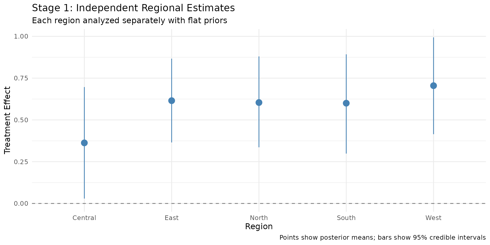
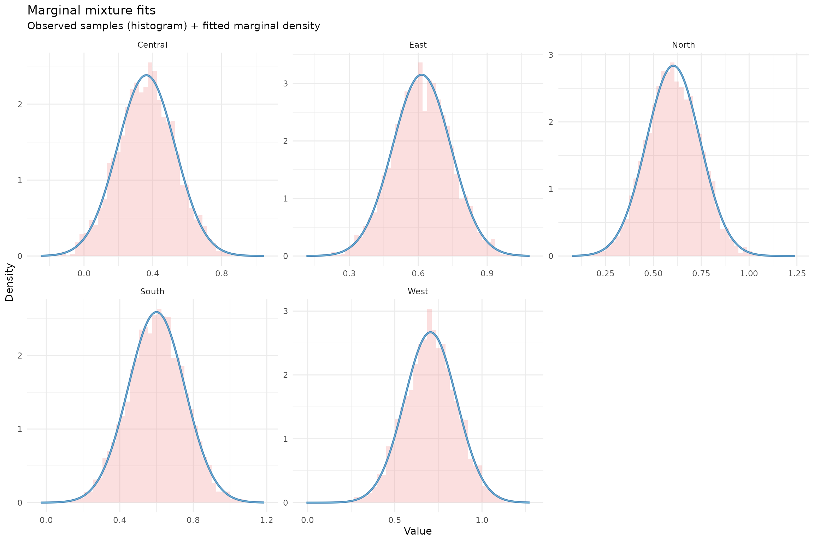
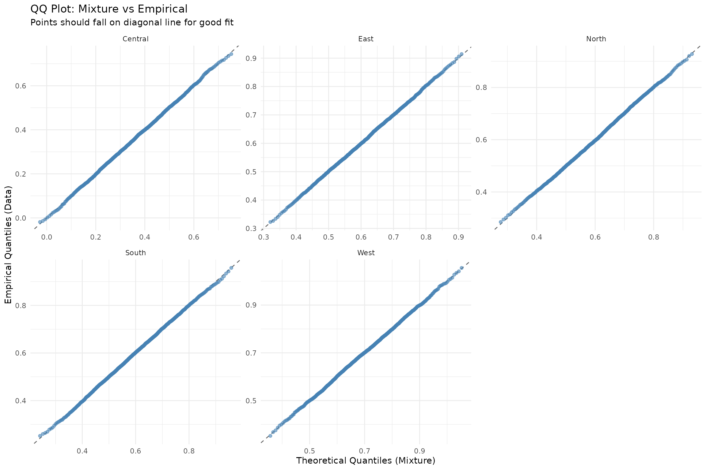
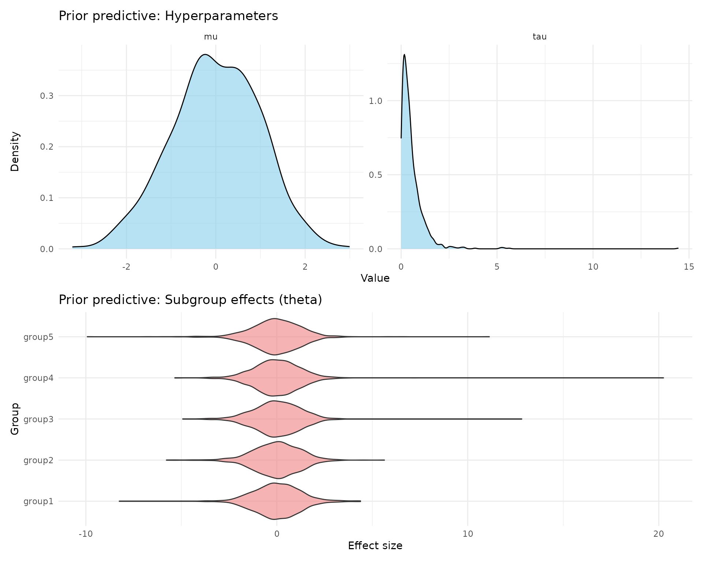
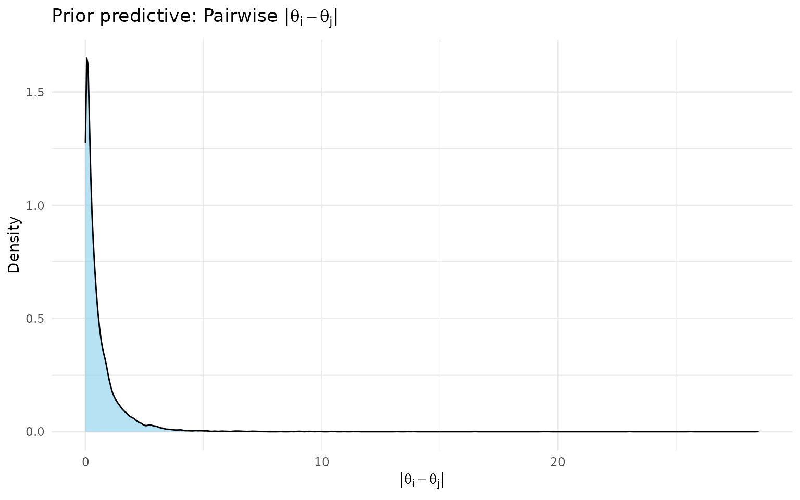

Getting Started with shrinkr
Jacob M. Maronge
2026-06-15
Source:vignettes/getting_started.Rmd
getting_started.RmdWhat is shrinkr?
shrinkr lets you apply Bayesian hierarchical shrinkage to group-specific estimates in a modular, two-stage workflow:
- Stage 1: Fit your model separately for each group (region, hospital, study, etc.) using flat priors
- Stage 2: Borrow strength across groups through hierarchical shrinkage
Why use shrinkr?
- You’ve already fit separate models and want to pool information afterward
- You want modularity to separate model fitting from shrinkage estimation
- You want to simplify shrinkage estimation in complex models
- You want to try different shrinkage priors without refitting expensive Stage 1 models
- You need transparency in how much your results depend on the hierarchical prior
- You’re doing meta-analysis or federated learning with summary statistics
A Complete Example: Regional Clinical Trial
Imagine a clinical trial run independently in 5 regions. Each region estimated a treatment effect, and now you want to apply shrinkage analysis.
Stage 1: Fit Independent Models with Stan
First, let’s create synthetic trial data:
library(rstan)
set.seed(1104)
true_mu <- 0.5
true_tau <- 0.3
true_effects <- c(0.45, 0.72, 0.38, 0.55, 0.61)
regions <- c("North", "South", "East", "West", "Central")
n_per_region <- c(100, 80, 120, 90, 70)
trial_data <- lapply(seq_along(regions), function(i) {
n <- n_per_region[i]
data.frame(
region = regions[i],
treatment = rep(c(0, 1), each = n/2),
outcome = c(
rnorm(n/2, mean = 0, sd = 1),
rnorm(n/2, mean = true_effects[i], sd = 1)
)
)
}) %>% bind_rows()#> region treatment outcome
#> 1 North 0 -0.04382439
#> 2 North 0 0.64111730
#> 3 North 0 -0.33395868
#> 4 North 0 -2.60279243
#> 5 North 0 1.17838867
#> 6 North 0 -0.20705477
#>
#> 0 1
#> Central 35 35
#> East 60 60
#> North 50 50
#> South 40 40
#> West 45 45Now we write a Stan model with treatment-by-region interaction:
stan_code <- "
data {
int<lower=0> N;
int<lower=1> G;
vector[N] y;
vector[N] treatment;
array[N] int<lower=1,upper=G> region;
}
parameters {
vector[G] beta_region;
real<lower=0> sigma;
}
model {
// IMPORTANT: Flat prior on beta_region - critical for the two-stage approach!
sigma ~ normal(0, 2);
for (n in 1:N) {
y[n] ~ normal(treatment[n] * beta_region[region[n]], sigma);
}
}
"
regions <- c("North", "South", "East", "West", "Central")
region_indices <- as.integer(factor(trial_data$region, levels = regions))
fit_stan <- stan(
model_code = stan_code,
data = list(
N = nrow(trial_data), G = length(regions),
y = trial_data$outcome, treatment = trial_data$treatment,
region = region_indices
),
chains = 4, iter = 2000, warmup = 1000, refresh = 0, seed = 123
)
beta_draws <- rstan::extract(fit_stan, pars = "beta_region")$beta_region
samples_list <- lapply(seq_along(regions), function(i) beta_draws[, i])
names(samples_list) <- regions
samples <- lapply(samples_list, function(x) matrix(x, ncol = 1))Let’s examine what we got from Stage 1:
stage1_summary <- data.frame(
region = regions,
mean = sapply(samples, mean),
sd = sapply(samples, sd),
lower = sapply(samples, function(x) quantile(x, 0.025)),
upper = sapply(samples, function(x) quantile(x, 0.975))
)
print(stage1_summary)#> region mean sd lower upper
#> North North 0.6040241 0.1405588 0.33617456 0.8799941
#> South South 0.6000233 0.1540522 0.29866430 0.8924705
#> East East 0.6152066 0.1265935 0.36515463 0.8666375
#> West West 0.7049122 0.1494923 0.41466597 0.9940618
#> Central Central 0.3626256 0.1676080 0.02935275 0.6966270Stage 1 visualization:
ggplot(stage1_summary, aes(x = region, y = mean)) +
geom_hline(yintercept = 0, linetype = "dashed", color = "gray50") +
geom_pointrange(aes(ymin = lower, ymax = upper),
size = 0.8, color = "steelblue") +
labs(
title = "Stage 1: Independent Regional Estimates",
subtitle = "Each region analyzed separately with flat priors",
x = "Region", y = "Treatment Effect",
caption = "Points show posterior means; bars show 95% credible intervals"
) +
theme_minimal(base_size = 12)
Notice: Central has the widest interval (n=70) and East the narrowest (n=120). Estimates vary considerably — hierarchical shrinkage will borrow strength across regions.
Stage 2: Apply Hierarchical Shrinkage
Step 1: Fit Mixture Approximation
mix <- fit_mixture(samples = samples, K_max = 3, verbose = TRUE)
print(mix)Check the approximation quality:
# Blue line should overlay the histogram well
plot(mix, draws = samples, type = "density")
# Points should fall near the diagonal
plot(mix, draws = samples, type = "qq")
Step 2: Specify Hierarchical Priors
hierarchical_priors <- list(
mu = dist_normal(0, 1),
tau = dist_truncated(dist_student_t(3, 0, 0.5), lower = 0)
)Check prior implications before fitting:
prior_pred <- sample_prior_predictive(
hierarchical_priors = hierarchical_priors,
n_groups = 5,
n_draws = 1000
)
cat("Prior on tau (between-region SD):\n")
cat(" Median:", round(median(prior_pred$tau), 2), "\n")
cat(" 95% interval:", round(quantile(prior_pred$tau, c(0.025, 0.975)), 2), "\n\n")
cat("Implied variation in regional effects:\n")
cat(" Typical range:", round(median(prior_pred$implied_range), 2), "\n")
cat(" 95% interval:", round(quantile(prior_pred$implied_range, c(0.025, 0.975)), 2), "\n")#> Prior on tau (between-region SD):
#> Median: 0.38
#> 95% interval: 0.02 1.95
#> Implied variation in regional effects:
#> Typical range: 0.81
#> 95% interval: 0.03 4.83
plot(prior_pred)
Check what the prior implies about pairwise subgroup differences:
The implied_range above measures max(theta) - min(theta)
across all groups for each draw. For a more detailed view,
prior_pairwise_differences() computes the distribution of
|theta_i - theta_j| for every pair of groups. This is particularly
useful for calibrating whether your prior places reasonable probability
on clinically meaningful differences.
pw <- prior_pairwise_differences(prior_pred)
print(pw)
#> == Prior Predictive: Pairwise |theta_i - theta_j| ==
#>
#> Groups: 5
#> Pairs: 10
#> Draws: 1000
#>
#> Overall quantiles of |theta_i - theta_j|:
#> q2.5 = 0.005, q25 = 0.094, q50 = 0.302, q75 = 0.752, q97.5 = 2.958
#>
#> Per-pair summary:
#> # A tibble: 10 × 6
#> pair median q2.5 q97.5 prob_gt_0.5 prob_gt_1
#> <chr> <dbl> <dbl> <dbl> <dbl> <dbl>
#> 1 group1 vs group2 0.314 0.00517 2.94 0.364 0.185
#> 2 group1 vs group3 0.320 0.00507 2.93 0.37 0.182
#> 3 group1 vs group4 0.318 0.00522 3.02 0.362 0.193
#> 4 group1 vs group5 0.298 0.00463 2.95 0.376 0.177
#> 5 group2 vs group3 0.316 0.00555 2.81 0.361 0.185
#> 6 group2 vs group4 0.297 0.00444 2.71 0.35 0.172
#> 7 group2 vs group5 0.297 0.00569 3.07 0.36 0.189
#> 8 group3 vs group4 0.306 0.00333 2.92 0.368 0.167
#> 9 group3 vs group5 0.294 0.00443 3.04 0.336 0.159
#> 10 group4 vs group5 0.277 0.00573 2.90 0.341 0.164
#>
#> -----------------------------------------------------
#> Use plot() to visualize
# Pooled histogram of |theta_i - theta_j| across all pairs
plot(pw)
The prob_gt_0.5 and prob_gt_1 columns in
the summary show the prior probability of observing pairwise differences
exceeding those thresholds — useful for assessing whether your prior is
consistent with your clinical expectations about subgroup
heterogeneity.
Step 3: Fit the Hierarchical Model
fit <- shrink(
mixture = mix,
hierarchical_priors = hierarchical_priors,
chains = 4,
iter = 2000,
warmup = 1000,
seed = 456,
refresh = 0
)
#>
#> SAMPLING FOR MODEL 'stage2_shrinkage' NOW (CHAIN 1).
#> Chain 1:
#> Chain 1: Gradient evaluation took 9e-06 seconds
#> Chain 1: 1000 transitions using 10 leapfrog steps per transition would take 0.09 seconds.
#> Chain 1: Adjust your expectations accordingly!
#> Chain 1:
#> Chain 1:
#> Chain 1: Iteration: 1 / 2000 [ 0%] (Warmup)
#> Chain 1: Iteration: 100 / 2000 [ 5%] (Warmup)
#> Chain 1: Iteration: 200 / 2000 [ 10%] (Warmup)
#> Chain 1: Iteration: 300 / 2000 [ 15%] (Warmup)
#> Chain 1: Iteration: 400 / 2000 [ 20%] (Warmup)
#> Chain 1: Iteration: 500 / 2000 [ 25%] (Warmup)
#> Chain 1: Iteration: 600 / 2000 [ 30%] (Warmup)
#> Chain 1: Iteration: 700 / 2000 [ 35%] (Warmup)
#> Chain 1: Iteration: 800 / 2000 [ 40%] (Warmup)
#> Chain 1: Iteration: 900 / 2000 [ 45%] (Warmup)
#> Chain 1: Iteration: 1000 / 2000 [ 50%] (Warmup)
#> Chain 1: Iteration: 1001 / 2000 [ 50%] (Sampling)
#> Chain 1: Iteration: 1100 / 2000 [ 55%] (Sampling)
#> Chain 1: Iteration: 1200 / 2000 [ 60%] (Sampling)
#> Chain 1: Iteration: 1300 / 2000 [ 65%] (Sampling)
#> Chain 1: Iteration: 1400 / 2000 [ 70%] (Sampling)
#> Chain 1: Iteration: 1500 / 2000 [ 75%] (Sampling)
#> Chain 1: Iteration: 1600 / 2000 [ 80%] (Sampling)
#> Chain 1: Iteration: 1700 / 2000 [ 85%] (Sampling)
#> Chain 1: Iteration: 1800 / 2000 [ 90%] (Sampling)
#> Chain 1: Iteration: 1900 / 2000 [ 95%] (Sampling)
#> Chain 1: Iteration: 2000 / 2000 [100%] (Sampling)
#> Chain 1:
#> Chain 1: Elapsed Time: 0.05 seconds (Warm-up)
#> Chain 1: 0.038 seconds (Sampling)
#> Chain 1: 0.088 seconds (Total)
#> Chain 1:
#>
#> SAMPLING FOR MODEL 'stage2_shrinkage' NOW (CHAIN 2).
#> Chain 2:
#> Chain 2: Gradient evaluation took 6e-06 seconds
#> Chain 2: 1000 transitions using 10 leapfrog steps per transition would take 0.06 seconds.
#> Chain 2: Adjust your expectations accordingly!
#> Chain 2:
#> Chain 2:
#> Chain 2: Iteration: 1 / 2000 [ 0%] (Warmup)
#> Chain 2: Iteration: 100 / 2000 [ 5%] (Warmup)
#> Chain 2: Iteration: 200 / 2000 [ 10%] (Warmup)
#> Chain 2: Iteration: 300 / 2000 [ 15%] (Warmup)
#> Chain 2: Iteration: 400 / 2000 [ 20%] (Warmup)
#> Chain 2: Iteration: 500 / 2000 [ 25%] (Warmup)
#> Chain 2: Iteration: 600 / 2000 [ 30%] (Warmup)
#> Chain 2: Iteration: 700 / 2000 [ 35%] (Warmup)
#> Chain 2: Iteration: 800 / 2000 [ 40%] (Warmup)
#> Chain 2: Iteration: 900 / 2000 [ 45%] (Warmup)
#> Chain 2: Iteration: 1000 / 2000 [ 50%] (Warmup)
#> Chain 2: Iteration: 1001 / 2000 [ 50%] (Sampling)
#> Chain 2: Iteration: 1100 / 2000 [ 55%] (Sampling)
#> Chain 2: Iteration: 1200 / 2000 [ 60%] (Sampling)
#> Chain 2: Iteration: 1300 / 2000 [ 65%] (Sampling)
#> Chain 2: Iteration: 1400 / 2000 [ 70%] (Sampling)
#> Chain 2: Iteration: 1500 / 2000 [ 75%] (Sampling)
#> Chain 2: Iteration: 1600 / 2000 [ 80%] (Sampling)
#> Chain 2: Iteration: 1700 / 2000 [ 85%] (Sampling)
#> Chain 2: Iteration: 1800 / 2000 [ 90%] (Sampling)
#> Chain 2: Iteration: 1900 / 2000 [ 95%] (Sampling)
#> Chain 2: Iteration: 2000 / 2000 [100%] (Sampling)
#> Chain 2:
#> Chain 2: Elapsed Time: 0.05 seconds (Warm-up)
#> Chain 2: 0.028 seconds (Sampling)
#> Chain 2: 0.078 seconds (Total)
#> Chain 2:
#>
#> SAMPLING FOR MODEL 'stage2_shrinkage' NOW (CHAIN 3).
#> Chain 3:
#> Chain 3: Gradient evaluation took 6e-06 seconds
#> Chain 3: 1000 transitions using 10 leapfrog steps per transition would take 0.06 seconds.
#> Chain 3: Adjust your expectations accordingly!
#> Chain 3:
#> Chain 3:
#> Chain 3: Iteration: 1 / 2000 [ 0%] (Warmup)
#> Chain 3: Iteration: 100 / 2000 [ 5%] (Warmup)
#> Chain 3: Iteration: 200 / 2000 [ 10%] (Warmup)
#> Chain 3: Iteration: 300 / 2000 [ 15%] (Warmup)
#> Chain 3: Iteration: 400 / 2000 [ 20%] (Warmup)
#> Chain 3: Iteration: 500 / 2000 [ 25%] (Warmup)
#> Chain 3: Iteration: 600 / 2000 [ 30%] (Warmup)
#> Chain 3: Iteration: 700 / 2000 [ 35%] (Warmup)
#> Chain 3: Iteration: 800 / 2000 [ 40%] (Warmup)
#> Chain 3: Iteration: 900 / 2000 [ 45%] (Warmup)
#> Chain 3: Iteration: 1000 / 2000 [ 50%] (Warmup)
#> Chain 3: Iteration: 1001 / 2000 [ 50%] (Sampling)
#> Chain 3: Iteration: 1100 / 2000 [ 55%] (Sampling)
#> Chain 3: Iteration: 1200 / 2000 [ 60%] (Sampling)
#> Chain 3: Iteration: 1300 / 2000 [ 65%] (Sampling)
#> Chain 3: Iteration: 1400 / 2000 [ 70%] (Sampling)
#> Chain 3: Iteration: 1500 / 2000 [ 75%] (Sampling)
#> Chain 3: Iteration: 1600 / 2000 [ 80%] (Sampling)
#> Chain 3: Iteration: 1700 / 2000 [ 85%] (Sampling)
#> Chain 3: Iteration: 1800 / 2000 [ 90%] (Sampling)
#> Chain 3: Iteration: 1900 / 2000 [ 95%] (Sampling)
#> Chain 3: Iteration: 2000 / 2000 [100%] (Sampling)
#> Chain 3:
#> Chain 3: Elapsed Time: 0.051 seconds (Warm-up)
#> Chain 3: 0.032 seconds (Sampling)
#> Chain 3: 0.083 seconds (Total)
#> Chain 3:
#>
#> SAMPLING FOR MODEL 'stage2_shrinkage' NOW (CHAIN 4).
#> Chain 4:
#> Chain 4: Gradient evaluation took 6e-06 seconds
#> Chain 4: 1000 transitions using 10 leapfrog steps per transition would take 0.06 seconds.
#> Chain 4: Adjust your expectations accordingly!
#> Chain 4:
#> Chain 4:
#> Chain 4: Iteration: 1 / 2000 [ 0%] (Warmup)
#> Chain 4: Iteration: 100 / 2000 [ 5%] (Warmup)
#> Chain 4: Iteration: 200 / 2000 [ 10%] (Warmup)
#> Chain 4: Iteration: 300 / 2000 [ 15%] (Warmup)
#> Chain 4: Iteration: 400 / 2000 [ 20%] (Warmup)
#> Chain 4: Iteration: 500 / 2000 [ 25%] (Warmup)
#> Chain 4: Iteration: 600 / 2000 [ 30%] (Warmup)
#> Chain 4: Iteration: 700 / 2000 [ 35%] (Warmup)
#> Chain 4: Iteration: 800 / 2000 [ 40%] (Warmup)
#> Chain 4: Iteration: 900 / 2000 [ 45%] (Warmup)
#> Chain 4: Iteration: 1000 / 2000 [ 50%] (Warmup)
#> Chain 4: Iteration: 1001 / 2000 [ 50%] (Sampling)
#> Chain 4: Iteration: 1100 / 2000 [ 55%] (Sampling)
#> Chain 4: Iteration: 1200 / 2000 [ 60%] (Sampling)
#> Chain 4: Iteration: 1300 / 2000 [ 65%] (Sampling)
#> Chain 4: Iteration: 1400 / 2000 [ 70%] (Sampling)
#> Chain 4: Iteration: 1500 / 2000 [ 75%] (Sampling)
#> Chain 4: Iteration: 1600 / 2000 [ 80%] (Sampling)
#> Chain 4: Iteration: 1700 / 2000 [ 85%] (Sampling)
#> Chain 4: Iteration: 1800 / 2000 [ 90%] (Sampling)
#> Chain 4: Iteration: 1900 / 2000 [ 95%] (Sampling)
#> Chain 4: Iteration: 2000 / 2000 [100%] (Sampling)
#> Chain 4:
#> Chain 4: Elapsed Time: 0.048 seconds (Warm-up)
#> Chain 4: 0.04 seconds (Sampling)
#> Chain 4: 0.088 seconds (Total)
#> Chain 4:
print(fit)
#> # A tibble: 3 × 7
#> variable mean sd q2.5 q50 q97.5 rhat
#> <chr> <dbl> <dbl> <dbl> <dbl> <dbl> <dbl>
#> 1 mu 0.580 0.0901 0.408 0.580 0.759 1.00
#> 2 tau 0.106 0.0962 0.00407 0.0833 0.382 1.00
#> 3 tau_squared 0.0206 0.0405 0.0000166 0.00694 0.146 1.00Step 4: Examine Results
mu_tau <- extract_mu_tau(fit)
cat("Overall treatment effect (mu):\n")
#> Overall treatment effect (mu):
cat(" Mean:", round(mean(mu_tau$mu), 3), "\n")
#> Mean: 0.58
cat(" 95% CI:", round(quantile(mu_tau$mu, c(0.025, 0.975)), 3), "\n\n")
#> 95% CI: 0.408 0.759
cat("Between-region heterogeneity (tau):\n")
#> Between-region heterogeneity (tau):
cat(" Mean:", round(mean(mu_tau$tau), 3), "\n")
#> Mean: 0.106
cat(" 95% CI:", round(quantile(mu_tau$tau, c(0.025, 0.975)), 3), "\n")
#> 95% CI: 0.004 0.382
theta_summary <- summarize_theta(fit)
print(theta_summary)
#> # A tibble: 5 × 9
#> group mean sd q2.5 q50 q97.5 rhat ess_bulk ess_tail
#> <chr> <dbl> <dbl> <dbl> <dbl> <dbl> <dbl> <dbl> <dbl>
#> 1 North 0.589 0.0949 0.406 0.588 0.779 1.00 4705. 3346.
#> 2 South 0.590 0.104 0.384 0.589 0.802 1.00 4419. 2962.
#> 3 East 0.592 0.0895 0.421 0.591 0.776 1.00 5150. 3358.
#> 4 West 0.617 0.103 0.428 0.612 0.840 1.00 3966. 3053.
#> 5 Central 0.524 0.117 0.256 0.537 0.721 1.00 2609. 2684.Alternative Input: Using Summary Statistics Only
If you only have published means and standard errors (no full posteriors), you can use the MLE approach:
mle_estimates <- sapply(samples, mean)
mle_variances <- sapply(samples, var)
fit_mle <- shrink(
mle = mle_estimates,
var_matrix = mle_variances,
hierarchical_priors = hierarchical_priors,
chains = 4,
iter = 2000,
warmup = 1000,
seed = 456,
refresh = 0
)
#>
#> SAMPLING FOR MODEL 'stage2_shrinkage' NOW (CHAIN 1).
#> Chain 1:
#> Chain 1: Gradient evaluation took 8e-06 seconds
#> Chain 1: 1000 transitions using 10 leapfrog steps per transition would take 0.08 seconds.
#> Chain 1: Adjust your expectations accordingly!
#> Chain 1:
#> Chain 1:
#> Chain 1: Iteration: 1 / 2000 [ 0%] (Warmup)
#> Chain 1: Iteration: 100 / 2000 [ 5%] (Warmup)
#> Chain 1: Iteration: 200 / 2000 [ 10%] (Warmup)
#> Chain 1: Iteration: 300 / 2000 [ 15%] (Warmup)
#> Chain 1: Iteration: 400 / 2000 [ 20%] (Warmup)
#> Chain 1: Iteration: 500 / 2000 [ 25%] (Warmup)
#> Chain 1: Iteration: 600 / 2000 [ 30%] (Warmup)
#> Chain 1: Iteration: 700 / 2000 [ 35%] (Warmup)
#> Chain 1: Iteration: 800 / 2000 [ 40%] (Warmup)
#> Chain 1: Iteration: 900 / 2000 [ 45%] (Warmup)
#> Chain 1: Iteration: 1000 / 2000 [ 50%] (Warmup)
#> Chain 1: Iteration: 1001 / 2000 [ 50%] (Sampling)
#> Chain 1: Iteration: 1100 / 2000 [ 55%] (Sampling)
#> Chain 1: Iteration: 1200 / 2000 [ 60%] (Sampling)
#> Chain 1: Iteration: 1300 / 2000 [ 65%] (Sampling)
#> Chain 1: Iteration: 1400 / 2000 [ 70%] (Sampling)
#> Chain 1: Iteration: 1500 / 2000 [ 75%] (Sampling)
#> Chain 1: Iteration: 1600 / 2000 [ 80%] (Sampling)
#> Chain 1: Iteration: 1700 / 2000 [ 85%] (Sampling)
#> Chain 1: Iteration: 1800 / 2000 [ 90%] (Sampling)
#> Chain 1: Iteration: 1900 / 2000 [ 95%] (Sampling)
#> Chain 1: Iteration: 2000 / 2000 [100%] (Sampling)
#> Chain 1:
#> Chain 1: Elapsed Time: 0.051 seconds (Warm-up)
#> Chain 1: 0.036 seconds (Sampling)
#> Chain 1: 0.087 seconds (Total)
#> Chain 1:
#>
#> SAMPLING FOR MODEL 'stage2_shrinkage' NOW (CHAIN 2).
#> Chain 2:
#> Chain 2: Gradient evaluation took 6e-06 seconds
#> Chain 2: 1000 transitions using 10 leapfrog steps per transition would take 0.06 seconds.
#> Chain 2: Adjust your expectations accordingly!
#> Chain 2:
#> Chain 2:
#> Chain 2: Iteration: 1 / 2000 [ 0%] (Warmup)
#> Chain 2: Iteration: 100 / 2000 [ 5%] (Warmup)
#> Chain 2: Iteration: 200 / 2000 [ 10%] (Warmup)
#> Chain 2: Iteration: 300 / 2000 [ 15%] (Warmup)
#> Chain 2: Iteration: 400 / 2000 [ 20%] (Warmup)
#> Chain 2: Iteration: 500 / 2000 [ 25%] (Warmup)
#> Chain 2: Iteration: 600 / 2000 [ 30%] (Warmup)
#> Chain 2: Iteration: 700 / 2000 [ 35%] (Warmup)
#> Chain 2: Iteration: 800 / 2000 [ 40%] (Warmup)
#> Chain 2: Iteration: 900 / 2000 [ 45%] (Warmup)
#> Chain 2: Iteration: 1000 / 2000 [ 50%] (Warmup)
#> Chain 2: Iteration: 1001 / 2000 [ 50%] (Sampling)
#> Chain 2: Iteration: 1100 / 2000 [ 55%] (Sampling)
#> Chain 2: Iteration: 1200 / 2000 [ 60%] (Sampling)
#> Chain 2: Iteration: 1300 / 2000 [ 65%] (Sampling)
#> Chain 2: Iteration: 1400 / 2000 [ 70%] (Sampling)
#> Chain 2: Iteration: 1500 / 2000 [ 75%] (Sampling)
#> Chain 2: Iteration: 1600 / 2000 [ 80%] (Sampling)
#> Chain 2: Iteration: 1700 / 2000 [ 85%] (Sampling)
#> Chain 2: Iteration: 1800 / 2000 [ 90%] (Sampling)
#> Chain 2: Iteration: 1900 / 2000 [ 95%] (Sampling)
#> Chain 2: Iteration: 2000 / 2000 [100%] (Sampling)
#> Chain 2:
#> Chain 2: Elapsed Time: 0.049 seconds (Warm-up)
#> Chain 2: 0.039 seconds (Sampling)
#> Chain 2: 0.088 seconds (Total)
#> Chain 2:
#>
#> SAMPLING FOR MODEL 'stage2_shrinkage' NOW (CHAIN 3).
#> Chain 3:
#> Chain 3: Gradient evaluation took 6e-06 seconds
#> Chain 3: 1000 transitions using 10 leapfrog steps per transition would take 0.06 seconds.
#> Chain 3: Adjust your expectations accordingly!
#> Chain 3:
#> Chain 3:
#> Chain 3: Iteration: 1 / 2000 [ 0%] (Warmup)
#> Chain 3: Iteration: 100 / 2000 [ 5%] (Warmup)
#> Chain 3: Iteration: 200 / 2000 [ 10%] (Warmup)
#> Chain 3: Iteration: 300 / 2000 [ 15%] (Warmup)
#> Chain 3: Iteration: 400 / 2000 [ 20%] (Warmup)
#> Chain 3: Iteration: 500 / 2000 [ 25%] (Warmup)
#> Chain 3: Iteration: 600 / 2000 [ 30%] (Warmup)
#> Chain 3: Iteration: 700 / 2000 [ 35%] (Warmup)
#> Chain 3: Iteration: 800 / 2000 [ 40%] (Warmup)
#> Chain 3: Iteration: 900 / 2000 [ 45%] (Warmup)
#> Chain 3: Iteration: 1000 / 2000 [ 50%] (Warmup)
#> Chain 3: Iteration: 1001 / 2000 [ 50%] (Sampling)
#> Chain 3: Iteration: 1100 / 2000 [ 55%] (Sampling)
#> Chain 3: Iteration: 1200 / 2000 [ 60%] (Sampling)
#> Chain 3: Iteration: 1300 / 2000 [ 65%] (Sampling)
#> Chain 3: Iteration: 1400 / 2000 [ 70%] (Sampling)
#> Chain 3: Iteration: 1500 / 2000 [ 75%] (Sampling)
#> Chain 3: Iteration: 1600 / 2000 [ 80%] (Sampling)
#> Chain 3: Iteration: 1700 / 2000 [ 85%] (Sampling)
#> Chain 3: Iteration: 1800 / 2000 [ 90%] (Sampling)
#> Chain 3: Iteration: 1900 / 2000 [ 95%] (Sampling)
#> Chain 3: Iteration: 2000 / 2000 [100%] (Sampling)
#> Chain 3:
#> Chain 3: Elapsed Time: 0.047 seconds (Warm-up)
#> Chain 3: 0.041 seconds (Sampling)
#> Chain 3: 0.088 seconds (Total)
#> Chain 3:
#>
#> SAMPLING FOR MODEL 'stage2_shrinkage' NOW (CHAIN 4).
#> Chain 4:
#> Chain 4: Gradient evaluation took 6e-06 seconds
#> Chain 4: 1000 transitions using 10 leapfrog steps per transition would take 0.06 seconds.
#> Chain 4: Adjust your expectations accordingly!
#> Chain 4:
#> Chain 4:
#> Chain 4: Iteration: 1 / 2000 [ 0%] (Warmup)
#> Chain 4: Iteration: 100 / 2000 [ 5%] (Warmup)
#> Chain 4: Iteration: 200 / 2000 [ 10%] (Warmup)
#> Chain 4: Iteration: 300 / 2000 [ 15%] (Warmup)
#> Chain 4: Iteration: 400 / 2000 [ 20%] (Warmup)
#> Chain 4: Iteration: 500 / 2000 [ 25%] (Warmup)
#> Chain 4: Iteration: 600 / 2000 [ 30%] (Warmup)
#> Chain 4: Iteration: 700 / 2000 [ 35%] (Warmup)
#> Chain 4: Iteration: 800 / 2000 [ 40%] (Warmup)
#> Chain 4: Iteration: 900 / 2000 [ 45%] (Warmup)
#> Chain 4: Iteration: 1000 / 2000 [ 50%] (Warmup)
#> Chain 4: Iteration: 1001 / 2000 [ 50%] (Sampling)
#> Chain 4: Iteration: 1100 / 2000 [ 55%] (Sampling)
#> Chain 4: Iteration: 1200 / 2000 [ 60%] (Sampling)
#> Chain 4: Iteration: 1300 / 2000 [ 65%] (Sampling)
#> Chain 4: Iteration: 1400 / 2000 [ 70%] (Sampling)
#> Chain 4: Iteration: 1500 / 2000 [ 75%] (Sampling)
#> Chain 4: Iteration: 1600 / 2000 [ 80%] (Sampling)
#> Chain 4: Iteration: 1700 / 2000 [ 85%] (Sampling)
#> Chain 4: Iteration: 1800 / 2000 [ 90%] (Sampling)
#> Chain 4: Iteration: 1900 / 2000 [ 95%] (Sampling)
#> Chain 4: Iteration: 2000 / 2000 [100%] (Sampling)
#> Chain 4:
#> Chain 4: Elapsed Time: 0.049 seconds (Warm-up)
#> Chain 4: 0.033 seconds (Sampling)
#> Chain 4: 0.082 seconds (Total)
#> Chain 4:
mu_tau_mle <- extract_mu_tau(fit_mle)
cat("Mixture approach:\n")
#> Mixture approach:
cat(" mu =", round(mean(mu_tau$mu), 3), "\n")
#> mu = 0.58
cat(" tau =", round(mean(mu_tau$tau), 3), "\n\n")
#> tau = 0.106
cat("MLE approach:\n")
#> MLE approach:
cat(" mu =", round(mean(mu_tau_mle$mu), 3), "\n")
#> mu = 0.584
cat(" tau =", round(mean(mu_tau_mle$tau), 3), "\n")
#> tau = 0.113| Method | Use When | Pros | Cons |
|---|---|---|---|
| Mixture | You have full posteriors | Captures non-normality; More accurate | Requires posterior samples |
| MLE | Only means + SEs available | Simpler; Works with published data | Assumes normality |
Complete Stan → shrinkr Workflow Summary
# 1. Write Stan model with FLAT PRIORS on parameters of interest
stan_code <- "
data {
int<lower=0> N;
int<lower=1> G;
vector[N] y;
vector[N] treatment;
array[N] int<lower=1,upper=G> group;
}
parameters {
vector[G] theta; // Group-specific effects - NO PRIOR SPECIFIED
real<lower=0> sigma;
}
model {
sigma ~ normal(0, 2);
for (n in 1:N) {
y[n] ~ normal(treatment[n] * theta[group[n]], sigma);
}
}
"
# 2. Fit model once to get all group effects, extract posteriors
group_indices <- as.integer(factor(data$group, levels = groups))
fit_stan <- stan(
model_code = stan_code,
data = list(N = nrow(data), G = length(groups),
y = data$y, treatment = data$treatment,
group = group_indices),
chains = 4, iter = 2000, warmup = 1000, refresh = 0
)
theta_draws <- extract(fit_stan)$theta
samples <- lapply(seq_along(groups), function(i) matrix(theta_draws[, i], ncol = 1))
names(samples) <- groups
# 3. Fit mixture approximation and check quality
mix <- fit_mixture(samples, K_max = 3)
plot(mix, draws = samples)
# 4. Specify and check hierarchical priors
priors <- list(
mu = dist_normal(0, 5),
tau = dist_truncated(dist_student_t(3, 0, 1), lower = 0)
)
plot(sample_prior_predictive(priors, n_groups = length(groups)))
# 5. Fit, extract, and visualize
fit <- shrink(mixture = mix, hierarchical_priors = priors)
plot(fit)
summarize_theta(fit)
extract_mu_tau(fit)Key Concepts Checklist
- Stage 1 uses flat priors - This is critical! Don’t specify a prior on the parameter you’ll shrink
-
Mixture approximation - Allows shrinkr to work with
any posterior shape; check quality with
plot() -
Hierarchical priors - Applied only in Stage 2; use
sample_prior_predictive()to understand implications - Adaptive shrinkage - Uncertain estimates borrow more; precise estimates borrow less
- Diagnostics matter - Always check mixture fit, prior-data agreement, and MCMC convergence
Common Pitfalls to Avoid
- Using informative priors in Stage 1 - This creates “double priors” and breaks the equivalence
-
Skipping mixture quality checks - Poor
approximation → biased shrinkage, run:
plot(mix, draws = samples) -
Ignoring prior implications - Your prior might be
too strong or weak, run:
sample_prior_predictive()andplot() -
Not checking convergence - MCMC diagnostics apply
to Stage 2 too, check:
fit$diagnostics, Rhat, ESS
Next Steps
-
Advanced integration: See
vignette("tidy_bayesian_workflow")for working with tidyverse tools -
Real applications: See
vignette("brms_integration")for survival analysis and brms integration - Sensitivity analysis: Learn to explore different prior specifications efficiently (this is done in the brms vignette)
-
Federated learning: See
vignette("federated_learning")for distributed data analysis
Session Info
sessionInfo()
#> R version 4.6.0 (2026-04-24)
#> Platform: x86_64-pc-linux-gnu
#> Running under: Ubuntu 24.04.4 LTS
#>
#> Matrix products: default
#> BLAS: /usr/lib/x86_64-linux-gnu/openblas-pthread/libblas.so.3
#> LAPACK: /usr/lib/x86_64-linux-gnu/openblas-pthread/libopenblasp-r0.3.26.so; LAPACK version 3.12.0
#>
#> locale:
#> [1] LC_CTYPE=C.UTF-8 LC_NUMERIC=C LC_TIME=C.UTF-8
#> [4] LC_COLLATE=C.UTF-8 LC_MONETARY=C.UTF-8 LC_MESSAGES=C.UTF-8
#> [7] LC_PAPER=C.UTF-8 LC_NAME=C LC_ADDRESS=C
#> [10] LC_TELEPHONE=C LC_MEASUREMENT=C.UTF-8 LC_IDENTIFICATION=C
#>
#> time zone: UTC
#> tzcode source: system (glibc)
#>
#> attached base packages:
#> [1] stats graphics grDevices utils datasets methods base
#>
#> other attached packages:
#> [1] lubridate_1.9.5 forcats_1.0.1 stringr_1.6.0
#> [4] dplyr_1.2.1 purrr_1.2.2 readr_2.2.0
#> [7] tidyr_1.3.2 tibble_3.3.1 ggplot2_4.0.3
#> [10] tidyverse_2.0.0 posterior_1.7.0 distributional_0.7.1
#> [13] shrinkr_0.4.4
#>
#> loaded via a namespace (and not attached):
#> [1] gtable_0.3.6 tensorA_0.36.2.1 xfun_0.58
#> [4] bslib_0.11.0 QuickJSR_1.10.0 htmlwidgets_1.6.4
#> [7] inline_0.3.21 tzdb_0.5.0 vctrs_0.7.3
#> [10] tools_4.6.0 generics_0.1.4 stats4_4.6.0
#> [13] parallel_4.6.0 pkgconfig_2.0.3 checkmate_2.3.4
#> [16] RColorBrewer_1.1-3 S7_0.2.2 desc_1.4.3
#> [19] RcppParallel_5.1.11-2 lifecycle_1.0.5 compiler_4.6.0
#> [22] farver_2.1.2 textshaping_1.0.5 codetools_0.2-20
#> [25] htmltools_0.5.9 sass_0.4.10 yaml_2.3.12
#> [28] pillar_1.11.1 pkgdown_2.2.0 jquerylib_0.1.4
#> [31] cachem_1.1.0 StanHeaders_2.32.10 abind_1.4-8
#> [34] mclust_6.1.2 rstan_2.32.7 tidyselect_1.2.1
#> [37] digest_0.6.39 stringi_1.8.7 labeling_0.4.3
#> [40] fastmap_1.2.0 grid_4.6.0 cli_3.6.6
#> [43] magrittr_2.0.5 patchwork_1.3.2 loo_2.9.0
#> [46] utf8_1.2.6 pkgbuild_1.4.8 withr_3.0.2
#> [49] scales_1.4.0 backports_1.5.1 timechange_0.4.0
#> [52] rmarkdown_2.31 matrixStats_1.5.0 otel_0.2.0
#> [55] gridExtra_2.3 ragg_1.5.2 hms_1.1.4
#> [58] evaluate_1.0.5 knitr_1.51 rstantools_2.6.0
#> [61] rlang_1.2.0 Rcpp_1.1.1-1.1 glue_1.8.1
#> [64] jsonlite_2.0.0 R6_2.6.1 systemfonts_1.3.2
#> [67] fs_2.1.0